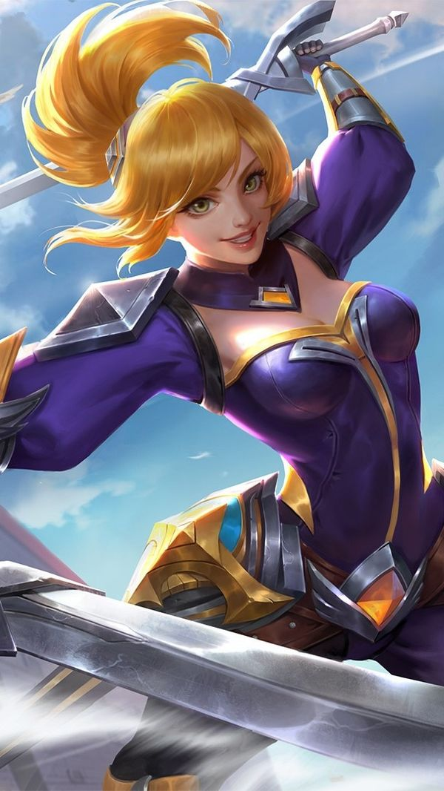
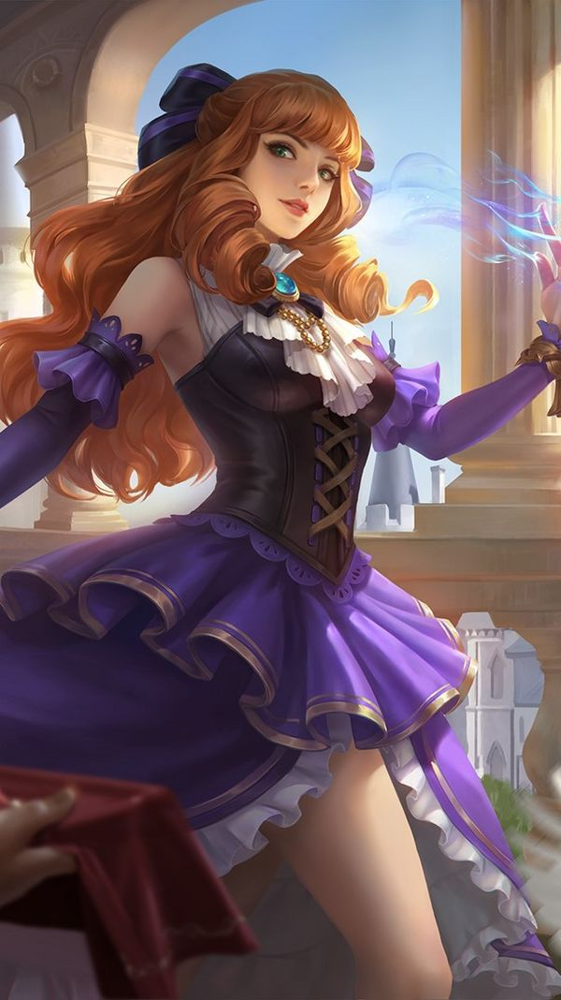
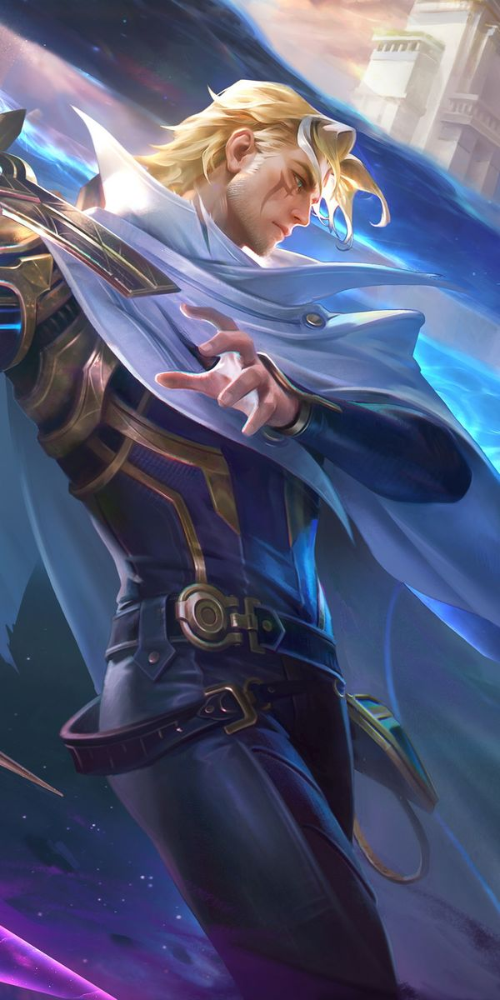

Hero Jungler Paling Efektif

1. Fanny (Assassin)
Hero dengan tingkat penguasaan hero tersulit. Sangat mematikan jika pengguna bisa menguasai kabel untuk mobilitas tanpa batas di seluruh map.
2. Fredrinn (Tank/Fighter)
Pilihan utama untuk meta tank jungler. Memiliki durabilitas luar biasa dan sangat kuat dalam perebutan objektif besar seperti Lord.

3. Guinevere (Fighter)
Sangat efektif setelah penyesuaian pada skill 2-nya. Mampu memberikan efek crowd control yang lama dan burst damage yang besar.

4. Nolan (Assassin)
Memiliki kemampuan farming yang sangat cepat dan mobilitas tinggi melalui skill dash yang cooldownnya singkat.

5. Baxia (Tank)
Counter alami untuk hero dengan lifesteal tinggi. Memiliki mobilitas tinggi dengan roda dan sangat keras untuk ditembus lawan.